Daniel
Teste o que você sabe sobre o livro inteiro, do cativeiro na Babilônia às visões do fim.
0 perguntas nesta rodada.
Cada pergunta tem 5 alternativas (A a E) e só uma está certa. A ordem das alternativas muda a cada vez.
A ideia: tente responder de cabeça primeiro. Se não souber, use a dica, leia a referência na Bíblia, raciocine e então responda. Ler o texto ajuda a fixar o que você aprende.
v1.5
Digite seu nome para começar.
Ranking
Os 10 melhores. Empate na pontuação: vence quem respondeu mais rápido.
Algumas imagens/ilustrações do livro de Daniel
🔍 Toque em uma imagem para ampliar.
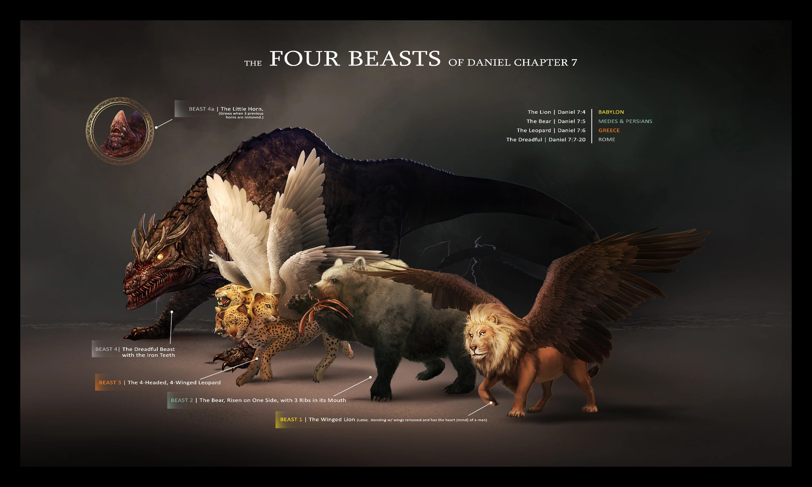
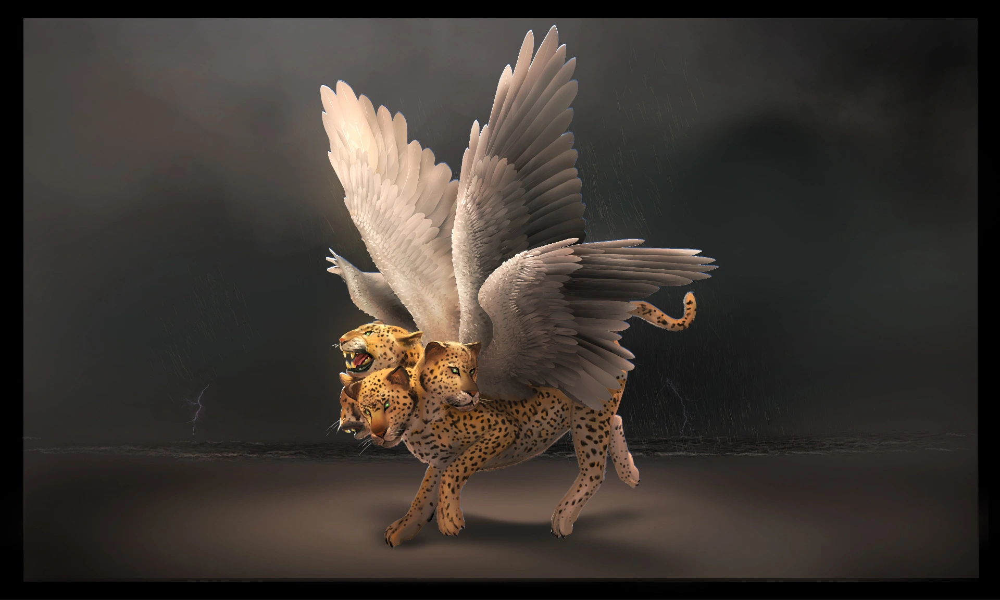
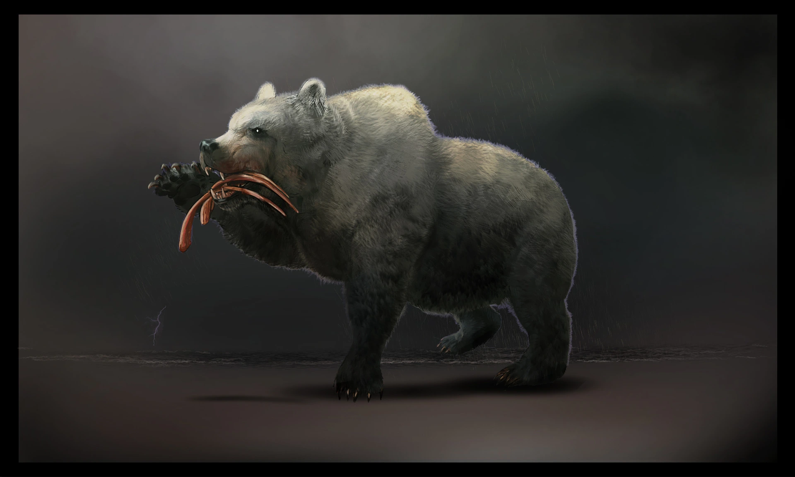
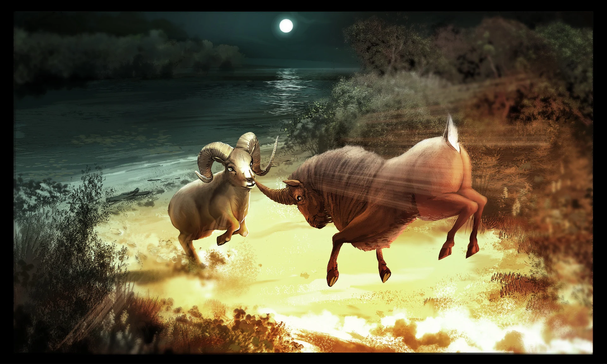
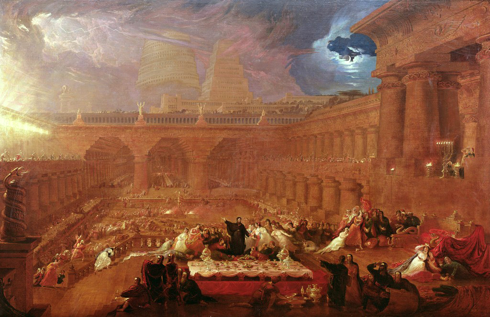
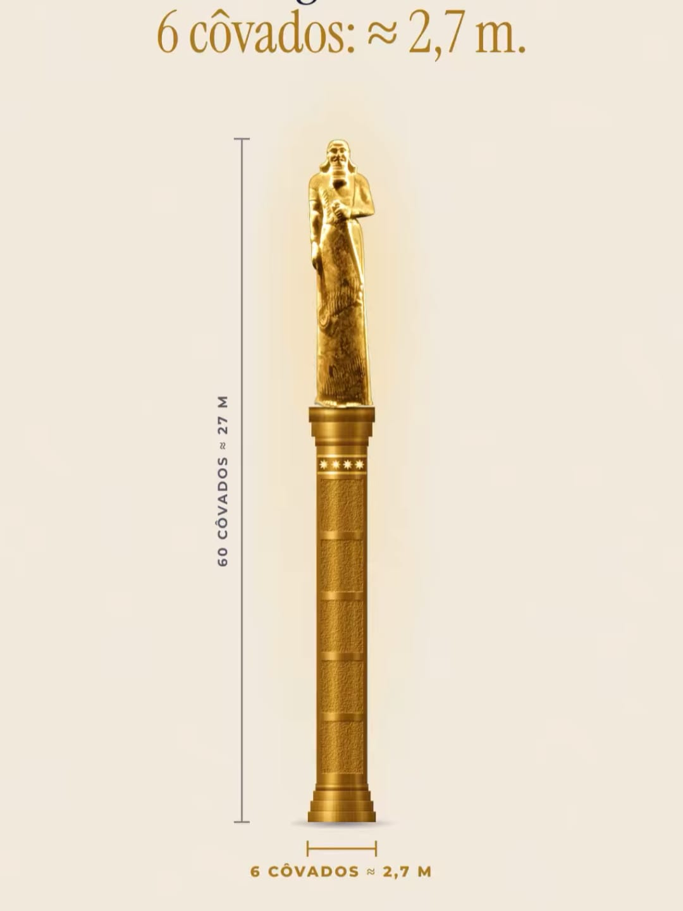


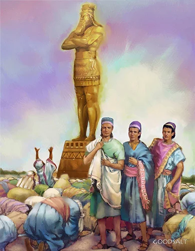

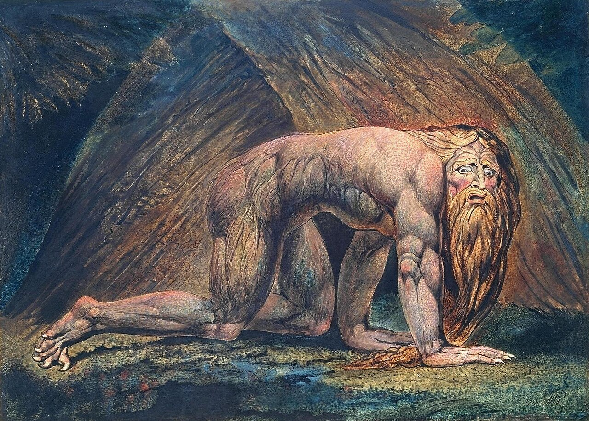
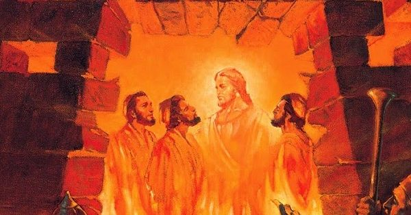
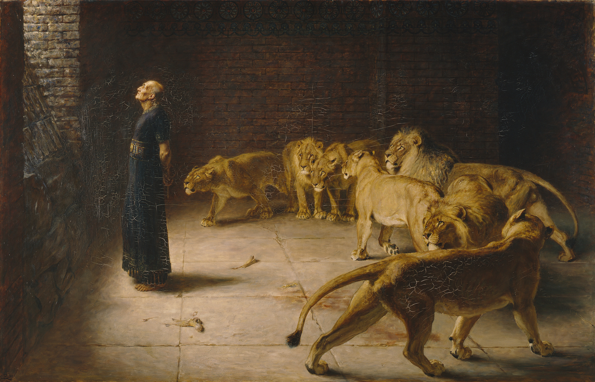
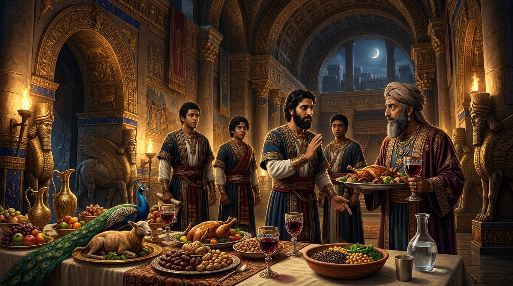
Tempo respondendo: 00:00
Ranking
Os 10 melhores. Empate na pontuação: vence quem respondeu mais rápido.